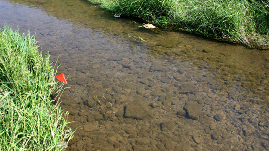

- Large Mason Jar
- Nearby Creek
- Aquatic Plants
- Small Shovel
This is an ideal creek because it isn't too deep, there are
aquatic plants around it, and there is soil. The shallow
water will also help with finding small organisms to add to
the closed jar ecosystem.

- First used a small shovel and fill the jar 1/4 with soil from
creek.
- Find aquatic plants and plant them into the soil.
- Then fill the jar with water from the creek.
- If possible, find small snails and place them into
soil.
- Optional: Add rocks and pieces of wood.
- Close jar and life will grow!
- Store away from sun to prevent a greenhouse effect. [Overheat]